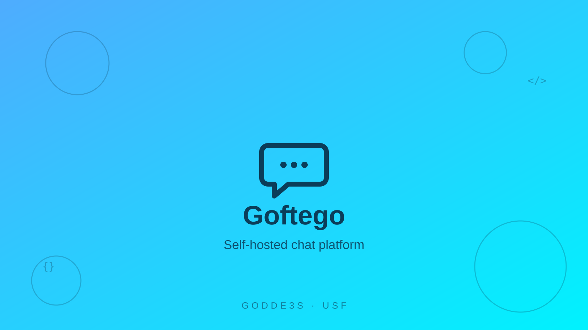
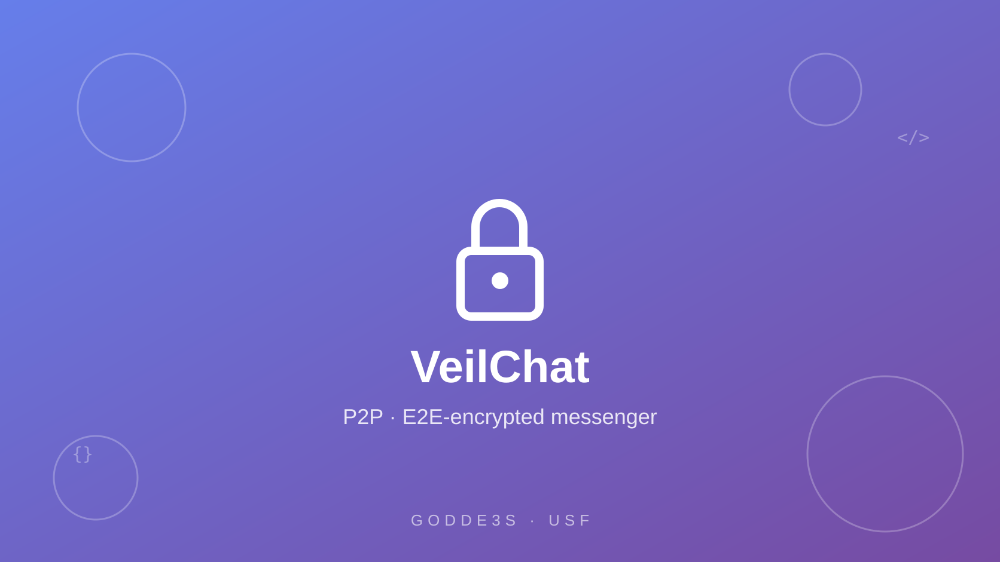
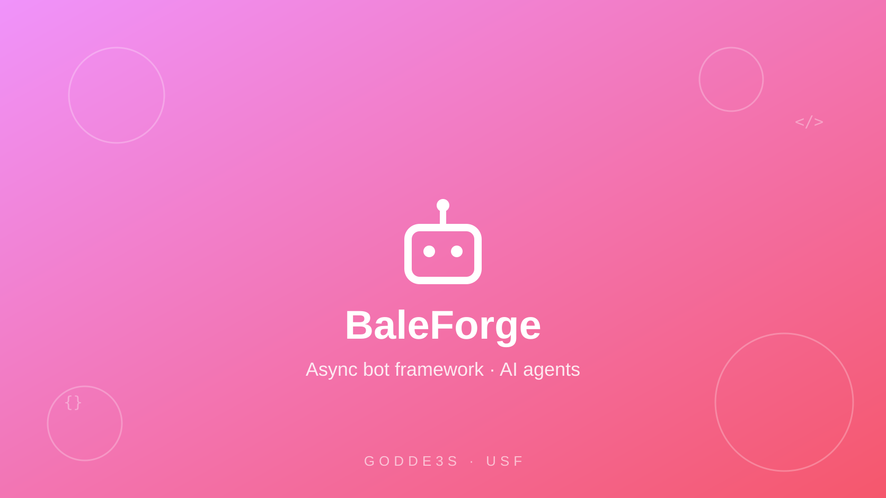
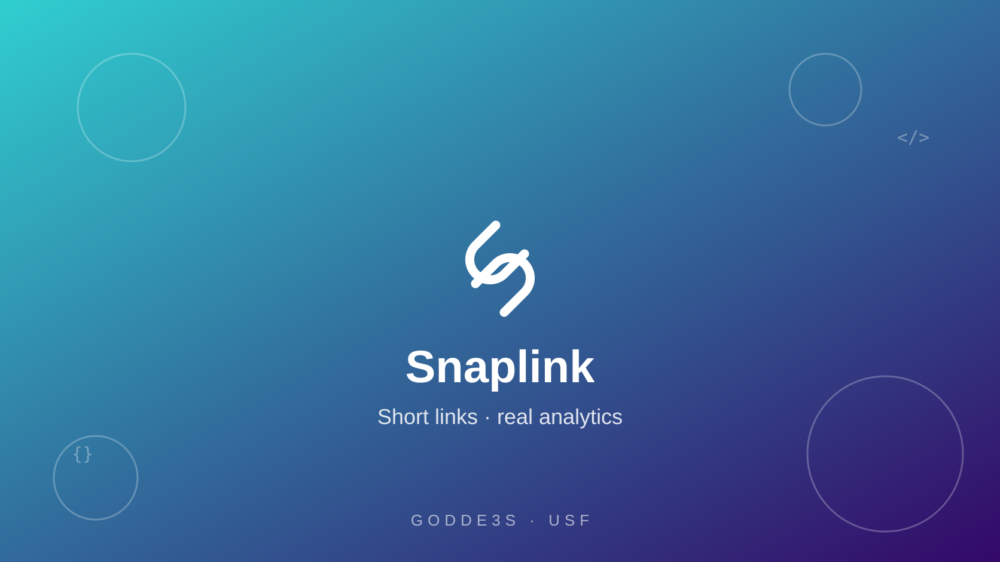
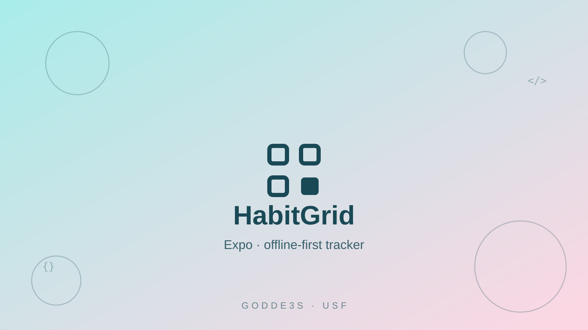
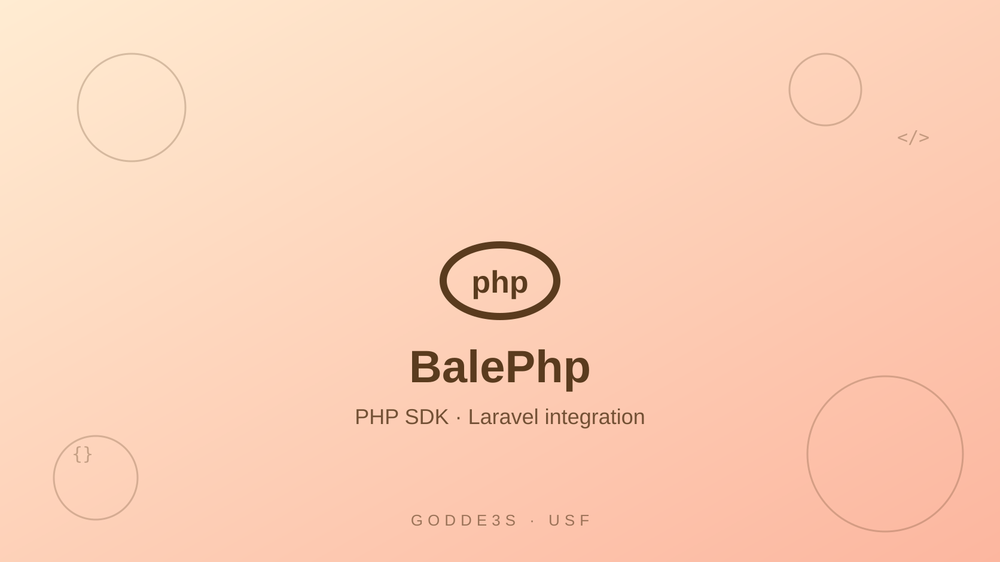
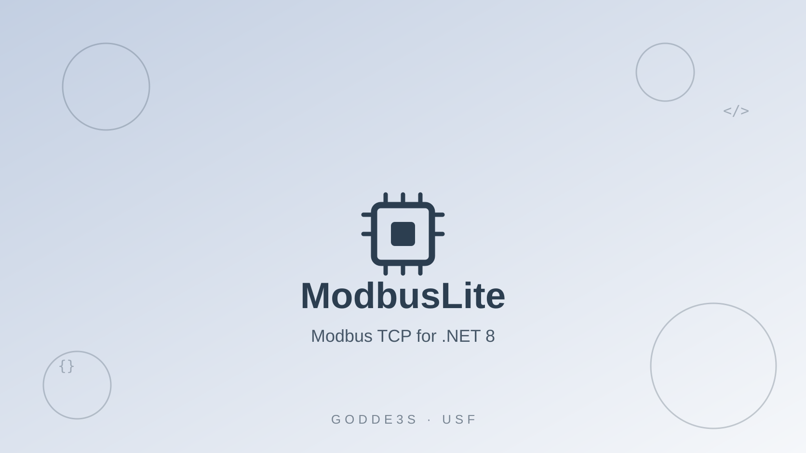
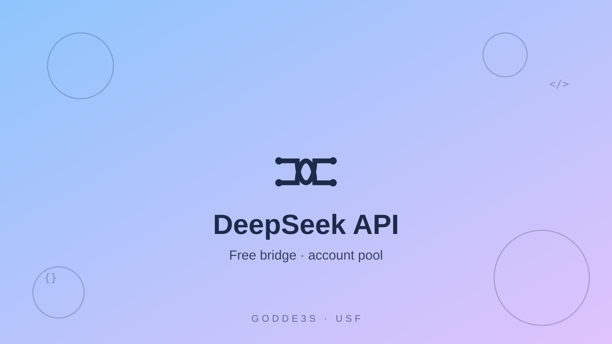
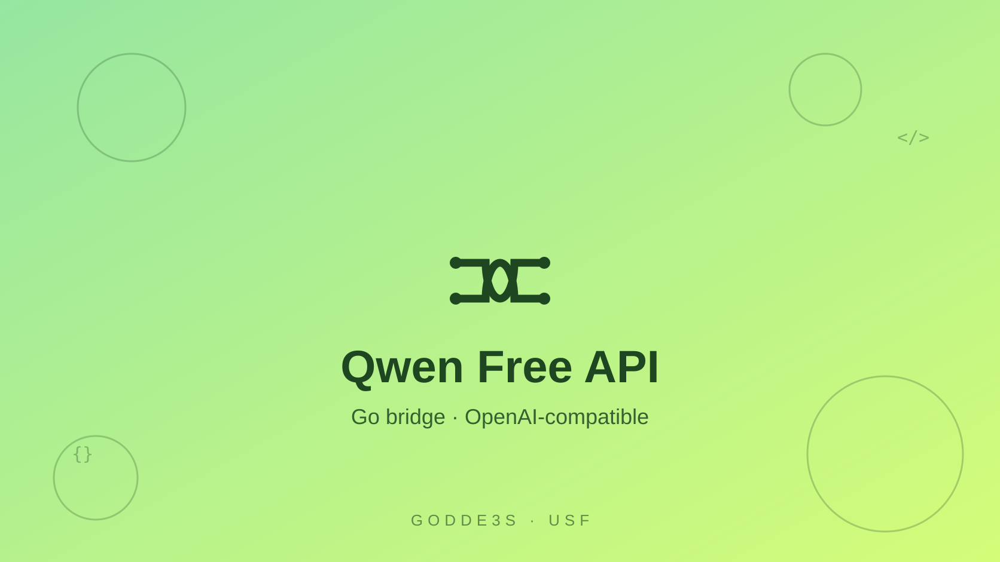
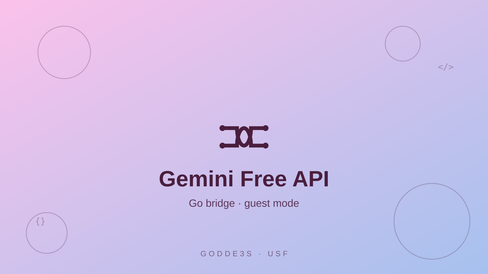

Goftego
JavaScriptSelf-hosted chat platform — channels, realtime WebSocket delivery, JWT auth, presence and a bilingual RTL UI. One SQLite file, one-command deploy.
View on GitHubI’m Reza Bazdar (Godde3s) — a full‑stack software engineer. Web apps, encrypted messengers, network tooling, AI infrastructure and industrial automation: one engineer across the whole pipeline.
# whoami
class Engineer:
"""Full-stack, end to end."""
name = "Reza Bazdar"
alias = "Godde3s"
stack = ["Python", "Go", "TS", "C#"]
focus = ["web", "networking",
"AI infra", "automation"]
def status(self) -> str:
return "shipping"Full-stack web, networking, industrial automation and AI infrastructure — designed, built and shipped by one engineer.
Languages & tools I ship with
Four builds, four stories — slide through the highlights.
Every card leads to a working public repository — no mockups, no vaporware.
Self-hosted chat platform — channels, realtime WebSocket delivery, JWT auth, presence and a bilingual RTL UI. One SQLite file, one-command deploy.
View on GitHubServerless P2P messenger with end-to-end encryption — X25519 handshake, ChaCha20-Poly1305 frames, LAN discovery. No servers, no metadata.
View on GitHubModern async framework for Bale messenger bots — declarative filters, FSM, middleware and an AI agent bridge for any OpenAI-compatible endpoint.
View on GitHubSelf-hosted URL shortener with per-click analytics — Next.js 14 App Router, TypeScript, Prisma and SQLite behind a clean dashboard.
View on GitHubOffline-first habit tracker for Android, iOS and web — Expo & React Native, streaks, 14-day dot grids and a pure, tested domain layer.
View on GitHubA single-binary network toolkit in pure Go — port scanner, TCP ping, HTTP health checks and DNS tools, cross-compiled to one static file.
View on GitHubOne router for every model — GLM, Qwen, DeepSeek and custom APIs behind a single OpenAI-compatible endpoint with load balancing and failover.
View on GitHubA complete OpenAI- and Anthropic-compatible bridge for GLM in a single Go file — account pool, real streaming, one-command deploy.
View on GitHubMinimal Modbus TCP client for .NET 8 — read/write coils and registers with strict MBAP framing, tested against an in-memory slave.
View on GitHubDrag, swipe or scroll sideways — 12 more, straight from the forge.

Self-hosted chat, realtime to the core.

Encrypted P2P, zero servers.

Async bot framework with FSM.

Short links, full analytics.

Offline-first habit tracking.

Zero-dependency PHP 8.2 SDK.

Industrial Modbus for .NET 8.

Multi-account bridge, streaming.

Single-file Go bridge.

Guest-mode Gemini, one binary.
Free Gemini to real API.
Agent stack, one-click deploy.
Production-tested skills — from SQL to SCADA, from the terminal to the edge.
Python, JavaScript, TypeScript, Go, C#, C, PHP, Ruby, SQL
HTML/CSS, React, Next.js, Tailwind, VitePress, RTL-first design
FastAPI, Node.js, REST, WebSockets, JWT auth, Prisma, OpenAI-compatible APIs
TCP/IP, proxies & tunnels, edge computing, Cloudflare Workers, VLESS infrastructure
End-to-end encryption, X25519, ChaCha20-Poly1305, secure session design
Model routing, agent orchestration, account pooling, SSE streaming, free-tier bridges
Docker, CI/CD, Hugging Face Spaces, Railway, Render, Fly.io, Koyeb
PLC & SCADA concepts, Modbus TCP, industrial automation protocols
My daily drivers — orchestrated so every agent gets the right brain at the right time.
Model-agnostic pair programming in the terminal, routed through my own omnirouter.
Parallel execution across sandboxes when a change fans out over many files.
Multi-step planning and codebase-wide edits with surgical precision.
My own orchestration stack — it routes models and automations end-to-end.
I’m Reza Bazdar, a full-stack software engineer from Iran who builds end-to-end: web platforms, mobile apps, networks, industrial automation and AI infrastructure. I write in whatever language the job demands — and I ship. Every repository linked from this page is a working, public build; documentation, tests and deployment scripts included.
My work splits into four threads: collaboration software (chat platforms and encrypted messengers), developer infrastructure (API bridges and model routers), network tooling (edge panels and single-binary utilities) and industrial automation (Modbus and .NET integration). I work in public — browse the code, read the build notes and reuse anything under MIT.
From spark to production — why not start today?